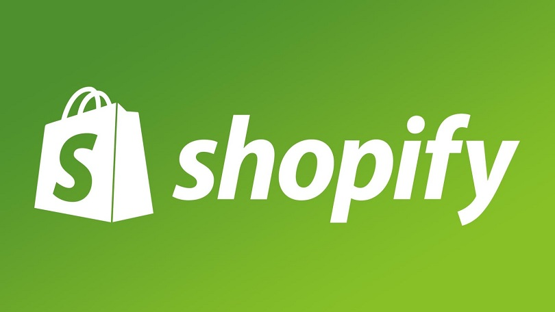
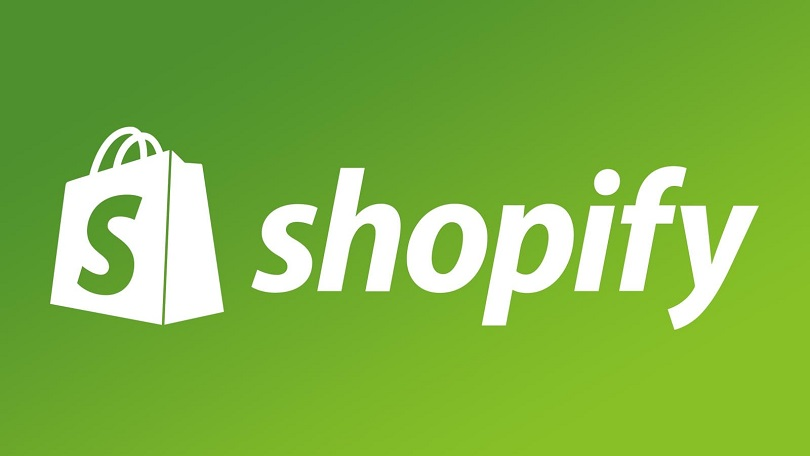
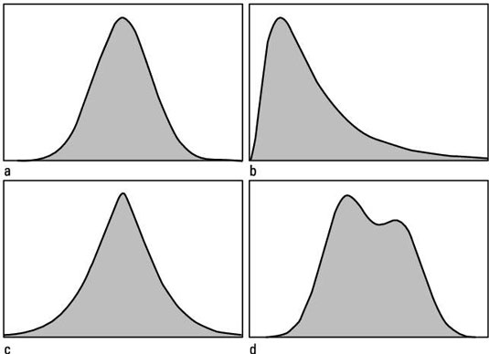
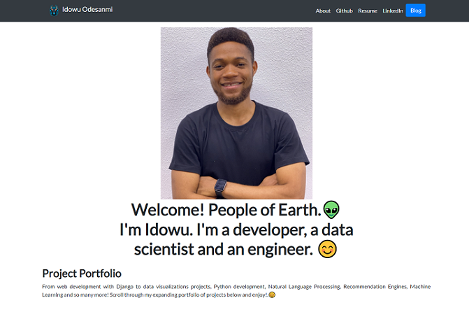
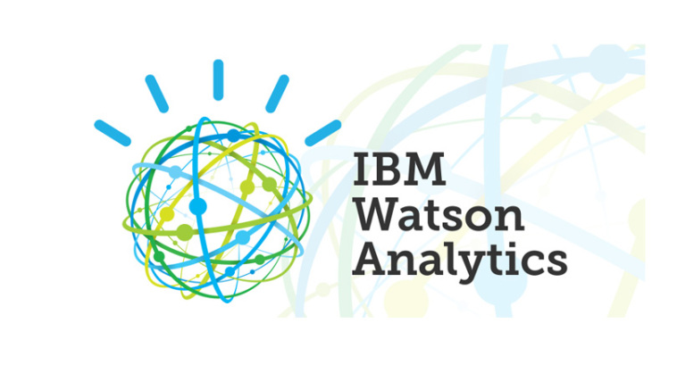

In this project, I took raw StackOverflow 2017 survey data, transformed it in Jupyter Notebook and analysed the correlation between family background, race and current income of professionals in the tech industry
 

In this project, I use SQL to explore a public store data recommended by Shopify in a developer challenge.

In this project, I took raw housing data and transform it in SQL Server to make it more usable for analysis.

Tableau Dashboards for visualization projects on Chain SuperStores, Football, and Housing

In this project, I built a data analysis package that helps users determine the mean, standard deviation and probability distribution of different datasets and outcomes.
In this project, I built a social media message classifier pipeline for detecting victims of disasters and those in emergency situations.

In this project, I built another portfolio website from scratcj with Python's Django.

In this project, I built Recommendation Engines for IBM Watson's platform.